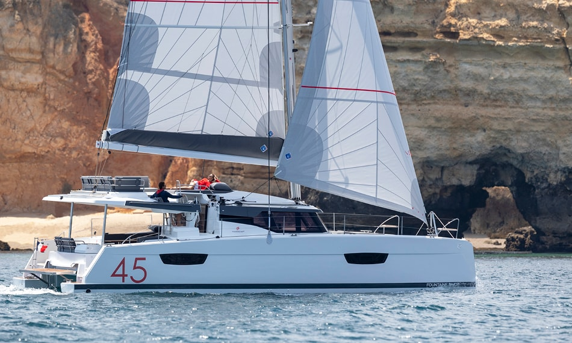
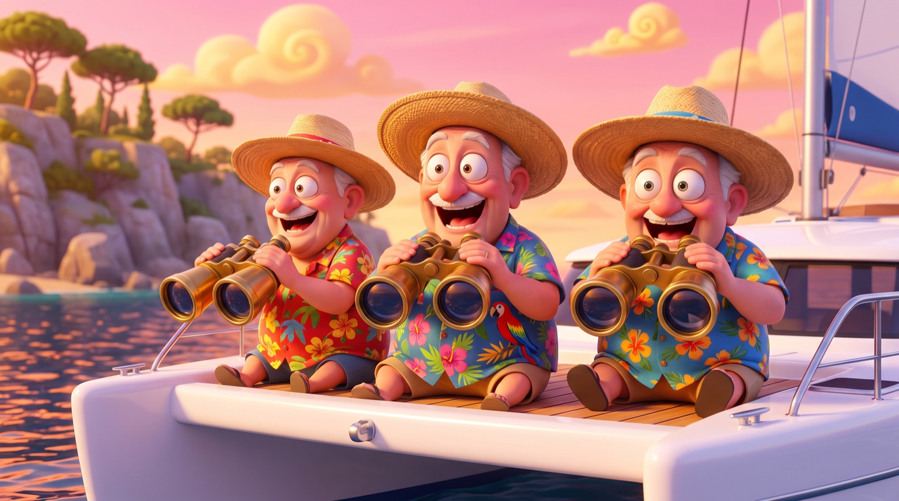
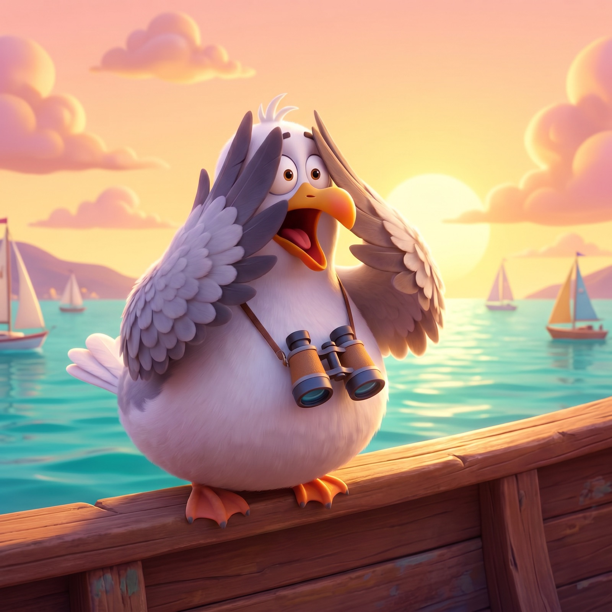
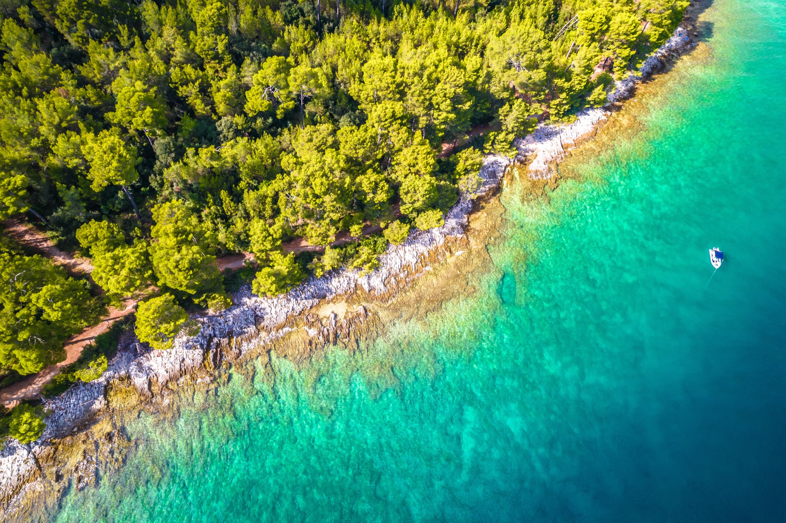
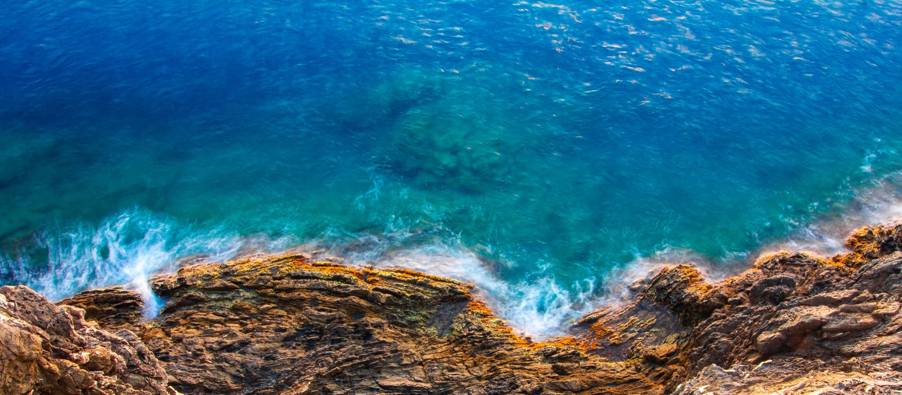
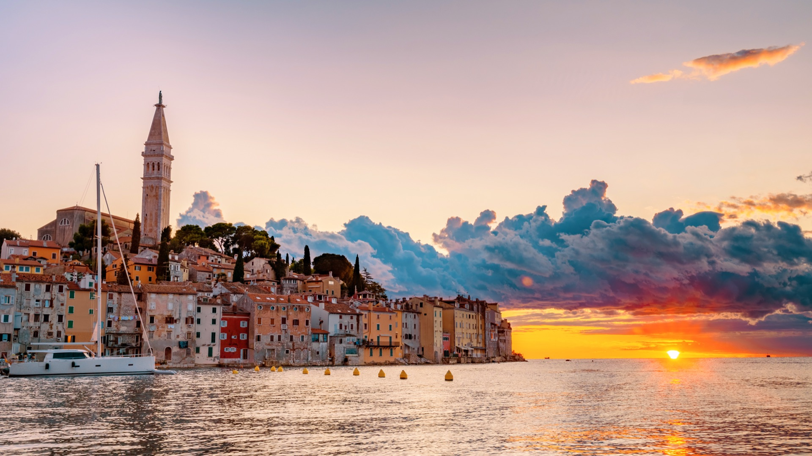
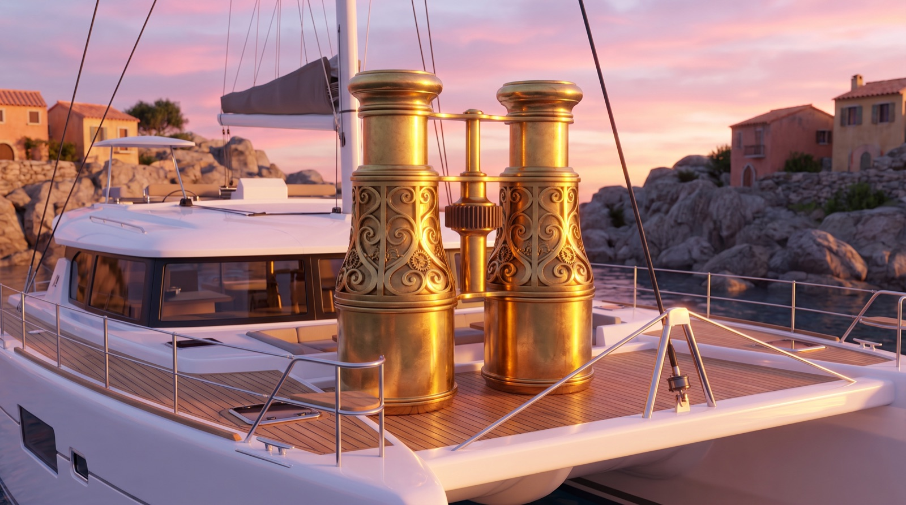
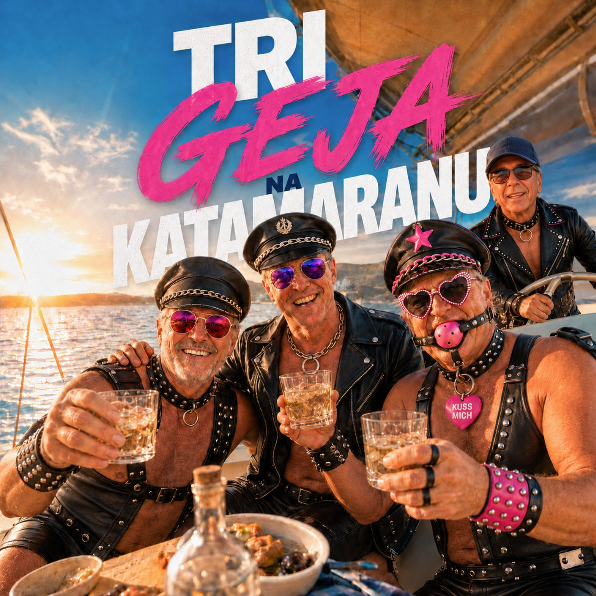
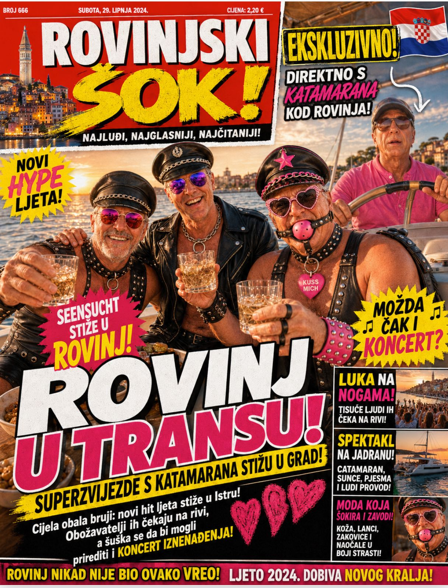
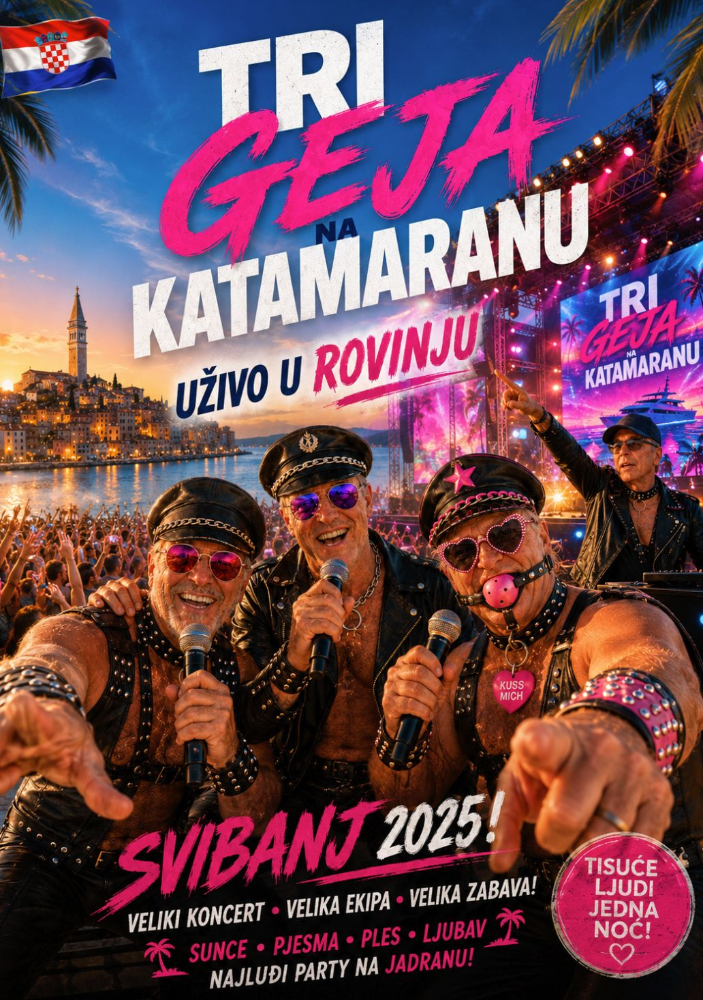

Hinter dieser Reling gibt's Eimer, Ferngläser und die nackteste Satire der Adria. Ab 18, alles Spaß, alles erfunden. Wer brav ist, dreht jetzt um — der Tretboot-Verleih ist zwei Stege weiter. Wer grinst, kommt an Bord.
Mit dem Betreten bestätigst du, dass du volljährig bist und Humor unter der Gürtellinie verträgst.
Willkommen an Bord, ihr Spanner-Schweinchen! Die (Ent)spanner-Tour gondelt im Schneckentempo an Punta Križ vorbei — der versautesten Bucht der Adria, wo die Hose schneller fällt als der Anker. Fernglas in die Pranke, Bier zwischen die Beine, Vollgas-Voyeurismus, bis die Möwe rot wird. Saufen, gaffen, grölen. Mallorca war gestern. Motor aus. Pimmel raus. Moin.

Käpt'n & Crew: eine Hand am Steuer, eine am Eimer, beide Augen am Fernglas. Frag nicht, wie das geht. Moin.
Punta Križ: die Bucht, wo Hose und Anstand gleichzeitig fallen. Wir schippern im Zeitlupentempo vorbei, damit auch der Letzte mit der dicksten Brille alles mitkriegt — und glaub uns, da gibt's einiges mitzukriegen, du dreckiger Spanner.
Das Fernglas ist Pflicht, das Bier sowieso. Eine Hand am Glas, eine am Eimer — für mehr Hände ist auf diesem Kahn kein Platz. Wer beide Hände frei hat, macht definitiv was falsch.
Die Möwen über Punta Križ haben schon alles gesehen und drehen aus Prinzip den Kopf weg. Wenn sogar die Viecher fremdschämen, weißt du: Du bist am richtigen Ort angekommen.

Sogar die Möwe dreht sich weg. Ehrenvogel. Du nicht — du gaffst weiter.
Eine felsige Landzunge am Goldenen Kap (Zlatni Rt): Pinien bis ans Wasser, glasklare Adria, kein Sandkorn weit und breit — und der berühmteste Naturisten-Spot der Küste. Zufahrt über Amarin, dann Schotter, dann … sind Sie da. Wir ankern in sicherer Badedistanz. Sehr sicher. Sehr nah.

Fernglas ans Auge, Gewissen in die Kabine. 10-fach Zoom, salzwasserfest. Damit erspähst du jedes Detail an Land, das die Sonne nicht verstecken konnte. Scharfstellen, festhalten, feixen — und blinzel nicht, sonst verpasst du die Pointe.

Die Bucht der Wahrheit
Rückfahrt nach Rovinj — mit leichtem LächelnAndere Veranstalter geben Gas. Wir nehmen ihn raus.
Erster Eimer noch im Hafen, weil nüchtern spannt sich's schlecht. Käpt'n brüllt „Leinen los", du brüllst zurück, keiner versteht was — perfekt. Festhalten, du Ferkel.
Motor runter auf Schleichfahrt, Ferngläser hoch, Klappe zu. Wir gleiten lautlos an der nacktesten Bucht der Adria vorbei. Hier wird nicht geredet, hier wird gegafft. Atmen nicht vergessen.
Plötzlich Schlager-Alarm: die Lederfummel-Superstars „Tri Geja na Katamaranu" kapern das Boot. Vollgas-Stimmung, Hüftschwung, Meet & Greet, alle kreischen, der Eimer fliegt.
Sonne weg, Promille drin, Fernglas beschlagen. Zurück in den Hafen torkeln mit einem dämlichen Grinsen, das nicht mehr weggeht. Du wurdest entspannt. Bitte gern.
Alle Preise pro Person. Diskretion ist immer inklusive — Schamgefühl gegen Aufpreis.
Alles, was der gepflegte Genießer für einen Nachmittag vor Punta Križ braucht.

Motor aus, Fernglas raus. Was du gesehen hast, bleibt zwischen dir und dem Fernglas.
Marke „Adlerauge XXL", 10-fach, salzwasserfest. Reicht von der Reling bis weit über die Schamgrenze. Pflicht an Bord. Ohne bist du blind.
Sangria? Bier? Beides? Egal, Hauptsache randvoll. Eine Tour ohne Eimer ist wie 'ne Bucht ohne Nackte — gibt's bei uns nicht. Prost, du Trinkmaschine.
Schwarzer Balken, immer einen Tick zu spät vorgehalten. Drüben braucht ihn keiner, an Bord manchmal schon. Breites Grinsen inklusive.
Schmier dich ein, sonst grillst du dir die Stellen weg, die du gleich am liebsten zeigst. Verbrannter Hintern spannt sich nämlich gar nicht gut.
Für den Moment, wenn „Motor aus, Pimmel raus" gerufen wird. Ein Pfiff, Hosen fallen, Möwen flüchten. Internationales Spanner-Signal.
Dein Ticket zum Meet & Greet mit den Lederfummel-Legenden. Autogramm, Selfie, Hüftschwung-Stunde. Der Glitzer geht nie wieder ab.

Drei Lederjacken, vier Whiskeygläser, ein Sommerhit. Die fabelhaftesten Superstars, die je eine Reling gestreift haben — direkt vom Katamaran in Ihr Herz (und Ihr Fernglas).
„Drei Schwule auf einem Katamaran —
morgens nur Salz im Haar,
keiner sieht uns hier …"
Bei jeder (Ent)spanner-Tour besteht die Chance auf ein spontanes Überraschungskonzert an Bord — inklusive Meet & Greet, Autogramm auf dem Fernglas und einem Küsschen aufs Objektiv. Tisuće ljudi, jedna noć — Tausende Leute, eine Nacht. Und Sie mittendrin.


„Bin mit Fernglas hin und mit Grinsen zurück. Hab Dinge gesehen, die brennen sich ein. Mallorca kann einpacken — das hier ist die Königsklasse vom Gaffen!"
„Hab meinem Schwager gesagt, wir machen 'ne ruhige Bootstour. Er glaubt mir bis heute nicht, dass das Fernglas dienstlich war. Bestes Abschiedsfest ever."
„Tri Geja na Katamaranu live auf'm Deck — ich hab geheult vor Glück und vor Lachen. Diese Männer in Leder sind die wahren Könige der Adria. Standing Ovation!"
„Motor aus, Pimmel raus — ich dachte, das wär 'n Spruch. War es nicht. Die Möwen haben weggeschaut, ich nicht. Beste 50 Euro seit meiner Scheidung."
Saufkahn mit Fernglas. Wir schippern im Schneckentempo an Punta Križ vorbei, der nacktesten Bucht der Adria, und du gaffst dir die Seele aus dem Leib. Spannen und entspannen in einem. Genial dreckig.
Nö, Matrose. Du bist Spanner, nicht Darsteller. Du guckst durchs Fernglas, die anderen liefern die Show. „Motor aus, Pimmel raus" ist ein Gruß, kein Befehl. Wer trotzdem mitmacht, zahlt die Reinigung.
Brauchst du Bier zum Saufen? Eben. Das Fernglas ist heilig. Ohne stehst du da und siehst nur verschwommene rosa Flecken. Mit siehst du den Sinn des Lebens.
Weil selbst die schon alles gesehen haben und sich fremdschämen. Wenn die Viecher den Kopf drehen, weißt du, dass du auf Spanner-Niveau Endgegner angekommen bist. Glückwunsch.
Nur die geilste Lederfummel-Schlagerband der Adria! Drei Legenden in glänzendem Leder, Village-People-Energie pur. Sie entern das Deck zum Überraschungskonzert. Gefeiert, nie verspottet — absolute Superstars.
Reinster Quatsch, Käpt'n! Champions League der Versautheit, aber alles Satire, alles freiwillig, alles über 18. Keine echte Bucht wird belästigt, keine echte Hose fällt. Nur dein Zwerchfell geht baden.
Satire, du Spanner. Die (Ent)spanner-Tour ist eine reine Comedy-Parodie der Marke Seensucht — erfunden und nicht buchbar. Punta Križ, FKK, Eimer, Fernglas und der Schlachtruf „Motor aus, Pimmel raus" sind reiner Klamauk. Voyeurismus und Belästigung sind in echt strafbar und ausdrücklich NICHT Teil des Spaßes. Ab 18. Die Band Tri Geja na Katamaranu sind gefeierte fiktive Superstars und das Highlight jeder Fahrt — mit Respekt verehrt, nie verspottet. Respektiere andere und ihre Privatsphäre, lass die Möwen in Ruhe. Keine echten Personen gemeint. Wer das ernst nimmt, hat den Witz nicht kapiert.
Aber DIE hier gibt es wirklich — komplett ohne Fernglas, dafür mit echtem Sonnenuntergang, edlem Katamaran und ganz ohne Sabber-Lätzchen. Die schönste Art, Rovinj vom Wasser aus zu erleben.
Zur echten Seensucht-Tour →